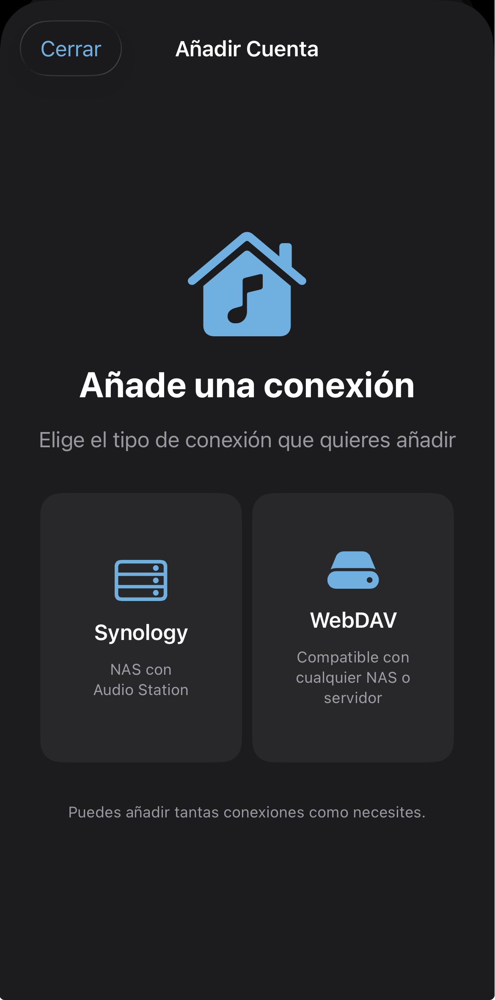
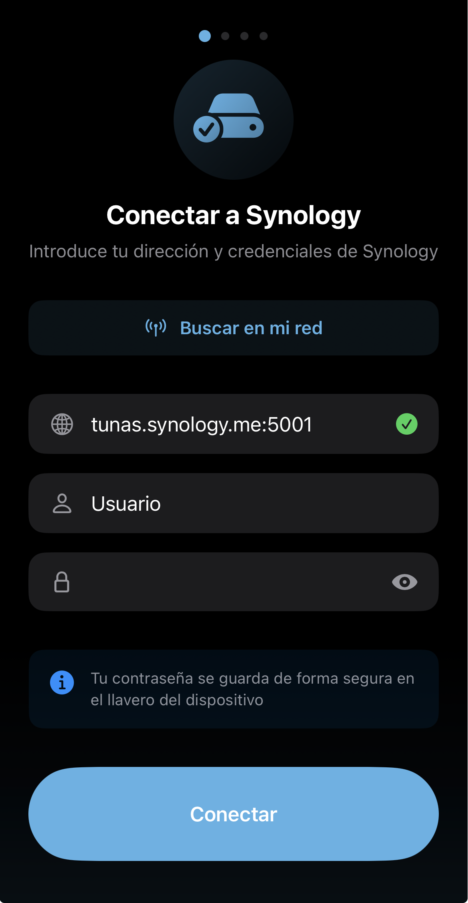
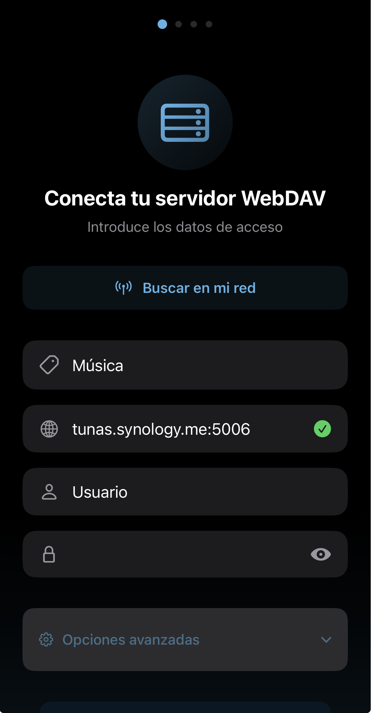
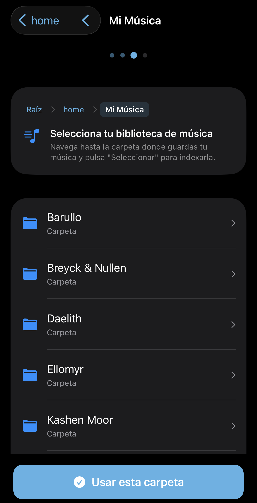
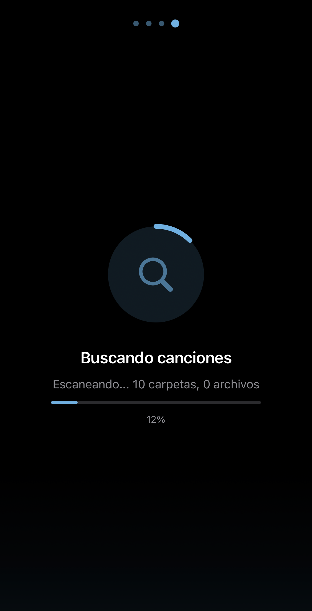
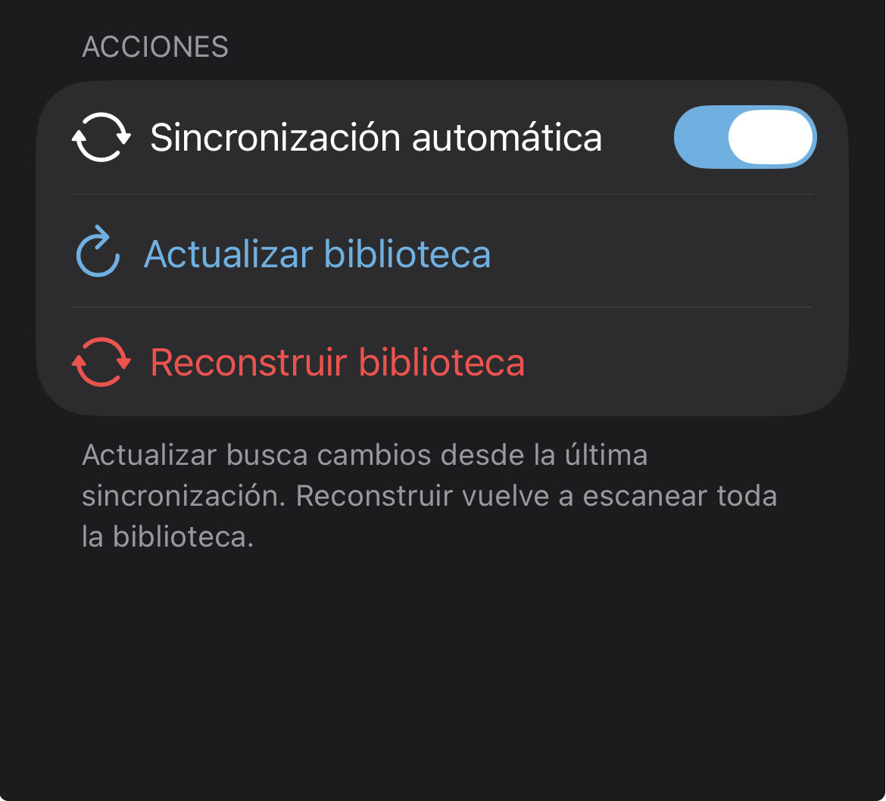
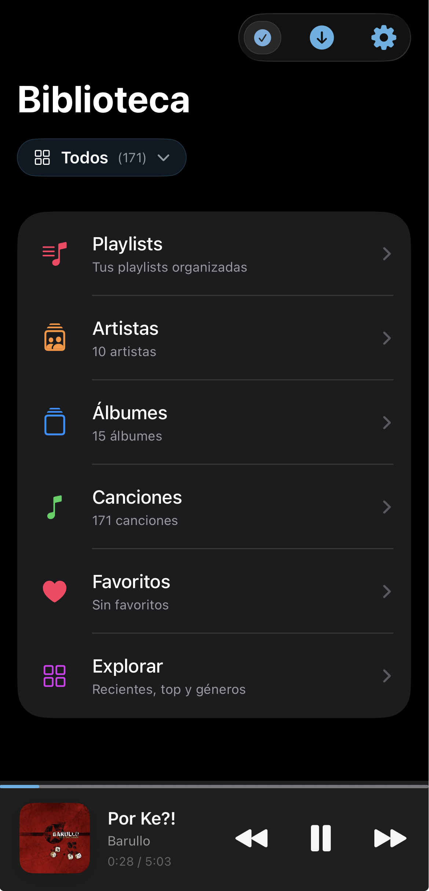

Configura tu servidor una vez y disfruta de toda tu música organizada automáticamente.
NASound no es un navegador de archivos. Indexa tu música automáticamente y la organiza por artistas, álbumes y canciones — como Spotify o Apple Music, pero con tu propia biblioteca almacenada en tu NAS o servidor.

NASound es compatible con dos tipos de servidor: Synology NAS (con Audio Station) y WebDAV (compatible con cualquier NAS o servidor). Puedes añadir tantas conexiones como necesites.
Si tienes un NAS Synology con Audio Station instalado, NASound se integra directamente con sus servicios.

Escribe la dirección de tu Synology, usuario y contraseña. También puedes usar el botón "Buscar en mi red" para detectarlo automáticamente en tu red local. Soporta autenticación de dos factores (2FA).
Tu contraseña se guarda de forma segura en el llavero (Keychain) de Apple.
NASound usa dos servicios de tu Synology simultáneamente:
Audio Station para indexar tu biblioteca musical (artistas, álbumes, metadatos y portadas).
File Station para la reproducción del audio y la sincronización incremental de cambios.
Si usas un NAS que no es Synology, un servidor propio o cualquier servicio compatible con WebDAV.

Introduce la URL de tu servidor WebDAV, un nombre descriptivo para identificar la cuenta, usuario y contraseña. También puedes buscar servidores en tu red local automáticamente.

Navega hasta la carpeta raíz donde guardas tu música y pulsa "Usar esta carpeta". NASound escaneará recursivamente todas las subcarpetas para encontrar tus archivos de audio.
A diferencia de un navegador de archivos, no necesitarás volver a navegar por carpetas — tu música se organizará automáticamente por artistas y álbumes usando los metadatos (tags ID3) de cada archivo.
Una vez configurada la conexión, NASound indexa toda tu música automáticamente.

NASound escanea tu servidor y extrae los metadatos de cada archivo: título, artista, álbum, año, portada, duración, formato y más. Este proceso solo se realiza una vez de forma completa.
Las siguientes sincronizaciones son incrementales — solo detectan los cambios (canciones nuevas, eliminadas o modificadas), por lo que son mucho más rápidas.

Desde los ajustes puedes configurar cómo y cuándo se sincroniza tu biblioteca:

Tu música aparece organizada por artistas, álbumes, canciones y géneros — sin importar cómo estén organizadas las carpetas en tu servidor.
Si añades música nueva a tu NAS, NASound la detectará automáticamente en la siguiente sincronización. Sin configurar nada más.